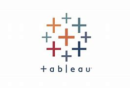

I'm excited to showcase some of the interactive Tableau dashboards I've created, which bring complex data to life and help stakeholders gain valuable insights.
On my portfolio, you'll find a collection of Tableau dashboards that demonstrate my skills in data visualization and storytelling, and showcase my ability to distill complex information into clear and actionable insights

Using SQL Server, I completed a COVID-19 cases analysis project that provided valuable insights into the pandemic's impact. Through querying and analyzing data, I was able to identify patterns and trends that analyze COVID-19 cases data.
The project allowed me to demonstrate my proficiency in SQL Server and showcase how data analysis can drive meaningful insights and decision-making.
Using PostgreSQL,I completed a music store data analysis project that provided valuable insights into sales performance and customer behavior. By querying and analyzing the music store's sales data, I uncovered trends,patterns,and key metrics that shed light on the store's operations and customer preferences.
Through data-driven insights,I provided actionable recommendations to optimize inventory management, marketing strategies, and customer engagement.
Using Microsoft Excel, I conducted an in-depth analysis of sales and customer data for VRINDA Store. Leveraging Excel's powerful features and functions, I extracted key insights from the data. Through various formulas, pivot tables, and charts, I gained valuable insights into product performance, customer demographics, purchase patterns, and sales trends. This analysis allowed me to identify opportunities for optimizing inventory management, pricing strategies, and customer engagement initiatives. By utilizing Excel's capabilities, I provided actionable recommendations that contributed to the success of VRINDA Store, enabling data-driven decision-making.

I have successfully completed a project on stress detection using machine learning techniques. By analyzing social media messages, I developed a model that can accurately identify patterns and behaviors related to stress. This project showcased my expertise in natural language processing, text classification, and machine learning algorithms. It demonstrated my ability to leverage data from social media platforms to gain valuable insights into mental health and provide effective stress management solutions.

I undertook an in-depth analysis of Diwali sales using Python and various data visualization techniques. By leveraging the power of libraries such as NumPy, Pandas, Matplotlib, and Seaborn, I explored the sales trends and customer behavior during the festive season. The project specifically focused on identifying the top-selling products and understanding the purchasing patterns of customers. Through interactive visualizations and insightful data analysis, I provided valuable insights to businesses, enabling them to make informed decisions and optimize their marketing strategies for future Diwali sales.